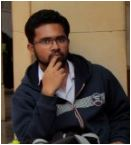

Profile Picture:

Bio Data:
- Name : Saptarshi Dandapat
- Mother's Name : Soma Dandapat
- Nationality : Indian
- Date of Birth : 26.08.2001
- Address : Swagatam Apartment, Bidhannagar, PO - Midnapore, PIN - 721101, WB, India
- Contact : +91 8436910329
- Email : saptarshirkmv@gmail.com
Current Institution:
First Year Undergraduate student of B.Sc. Mathematics at Ramakrishna Mission Vidyamandira, Belur.
Academic Qualification:
- High School
- Ramakrishna Mission Vidyabhavan, Midnapore (2011 - 2017). Passed Secondary Examination with 96% marks from WBBSE
- Midnapore Collegiate School (2017 - 2019). Passed Higher Secondary Examination with 88.8% marks from WBCHSE
- Undergraduate School
- B.Sc. Mathematics at Ramakrishna Mission Vidyamandira, Belur (2019 - ). (University of Calcutta)
- Qualified National Level Examination
- JEE Mains 2019
- JEE Advanced 2019
- Programming Languages known
- Text Editting Skills
Other Informations
Interested in Cricket, Football, Table Tennis, Coding, Mathematics.